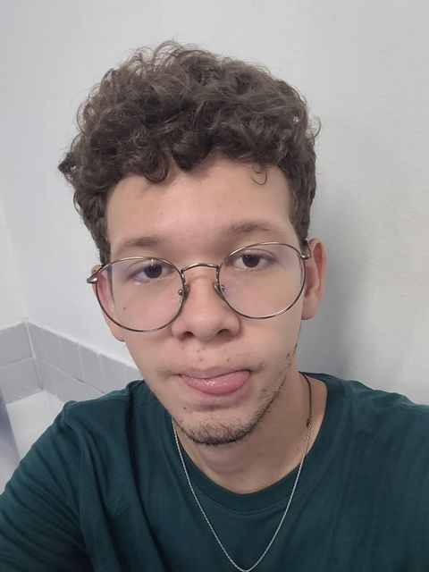

Primeiro Membro

- Meu nome é Antonio Luan e tenho 20 anos, estudo Análise e Desenvolvimento de Sistemas na Uninassau das Graças, gosto de vivênciar coisas novas, sou bem eclético em relação a gosto musical, para Hobies não tenho um bem definido pois gosto de fazer muitas coisas e entre elas jogar, praticar atividade física e entre outros.
- Competências: Sou uma pessoa bastante flexível e direta, com pensamento crítico e que sabe trabalhar em equipe.
- Experiência Profissional: Não possuo experiências profissionais.
- Escolaridade: Tenho Ensino Médio Completo e no momento estou Cursando o Ensino Superior - Uninassau (ADS) 2° período.